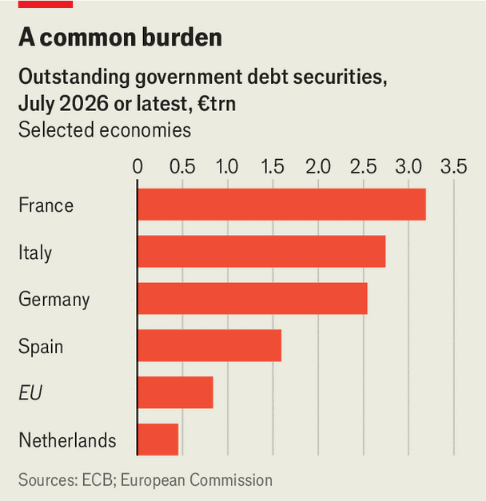

A common European safe asset is still unlikely
For that, blame high national debts
Jul 30th 2026
Germany’s chancellor, Friedrich Merz, flew to Dublin on July 28th just to hand-deliver a four-letter message: Nein. The recipient, Micheál Martin, his Irish counterpart, took over the rotating presidency of the Council of the European Union at the start of the month, and a new seven-year EU budget needs to be hammered out. Embattled at home, in part because of spending cuts and tax increases, Mr Merz insisted that the current proposal, around €1.7trn ($2trn), was unacceptable. “We need a budget draft that cuts across the board—to the tune of several hundred billion euros.”
The cuts have to be even larger if the EU also has to start repaying its debt. The bloc has issued €840bn (worth about 4.5% of GDP) in the past, mostly to back its post-pandemic recovery fund (see chart). Servicing and repaying that will take about €168bn out of the budget. The European Commission would like to add more debt, above what is already planned for a defence-loan programme and €90bn in help for Ukraine; it wants a debt-funded tool, worth over €300bn, to respond to unforeseen crises. Perhaps Mr Merz should consider the upside. A more debt-funded EU could help create a thriving market in European rather than national bonds.

So far, EU debt is trading at a discount to equivalent German paper, the continental benchmark: yields are about 0.3 percentage points higher. This is largely because the EU has no tax-raising powers and in a crisis Germany would surely honour its own debts first. Nor is EU debt permanent; it is supposed to be repaid and not rolled over. That is one reason why it is omitted from sovereign-bond indices—which is unlikely to change, says an executive at an index provider. “You also need compensation for the lower liquidity,” adds Konstantin Veit of Pimco, a fixed-income asset manager. A liquid futures market for EU debt, say, would make hedging risk cheaper. Today’s derivatives market is too thin.
Even new, debt-funded EU programmes are likely to be too small to make the market for EU debt sufficiently large and permanent. A potential solution is to convert existing national debt into European debt. Olivier Blanchard, a former chief economist of the IMF, and Ángel Ubide of Citadel, a hedge fund, have argued that countries should issue debt worth 25% of GDP via the EU, as senior “blue” bonds. Spain has recently put a variant of that idea to the rest of the EU.
Another idea is to issue all bills—short-term government bonds with a maturity of up to one year—jointly through the EU. Since bills are rarely included in debt restructurings, they are in effect senior debt. But the problem with both proposals is that they create some joint liabilities: who pays if things go wrong? “If you mutualise debt without a fiscal and political union, it is just a leap of faith,” says a senior commission official.
Countries with low debts would have to trust those with lots. By international standards, the euro area’s combined debt-to-GDP ratio, of 90%, looks manageable. America’s exceeds 120%; China’s has risen fast to 100%. But some EU countries, such as France, Italy and Spain, have ratios above 100%. And Europe’s expected nominal growth rate of around 3.5%—at best 1.4% real, plus 2% inflation, says the IMF—is on par with its current long-term interest rate. That means debt-to-gdp ratios will not shrink without primary budget surpluses (ie, before interest payments).
Morgan Stanley, a bank, reckons that interest costs, ageing and defence needs will add 3-5% of GDP to public spending by 2040. To put the debt ratio on a downward path by 2035 deficits must fall by 4-9% of GDP in the next decade, estimates the European Stability Mechanism, the euro zone’s main bail-out fund. Even Germany, normally a model of rectitude, is unsure how to fill budget gaps beyond 2028.
That puts bold proposals for common EU debt out of reach for now. EU debt will remain limited and tied to common spending programmes such as that for Ukraine. Deeper financial-market integration, and raising the euro’s international standing, will have to happen without a shared European benchmark bond. And do not bank on German debt being the substitute for ever. “There is a plausible scenario”, says one investor, “in which Spain ends up being more solid than Germany a decade from now.” ■